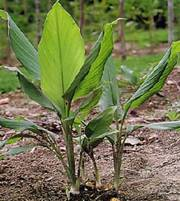
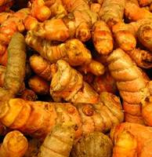
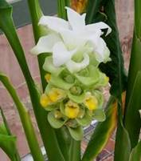
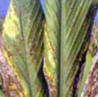
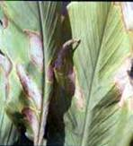
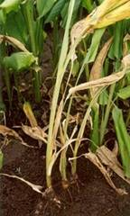
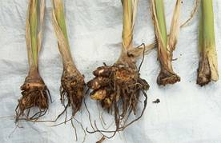
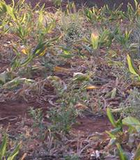
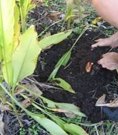
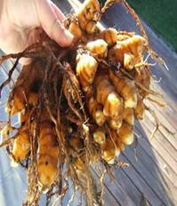

HORT282 :: Lecture 02 :: TURMERIC

TURMERIC
(Curcuma longa, Zingiberaceae)
Turmeric is the dried rhizome of Curcuma longa, an herbaceous plant, and native to tropical south East Asia. The rhizome has 1.8 to 5.4 percent curcumin, the pigment and 2.5 to 7.2 percent of essential oil. It is used as an important condiment and as a dye with varied application in drug and cosmetic industries. In India, it is grown in an area of 104,500 ha producing annually 3, 28,800 tonnes. Although, India is leading in its production (75% of world output), the average productivity and quality are not satisfactory and these limit our export to about 10 to 15 percent of our production only , annually 18 to 20 crores worth of turmeric are exported. In India, Andhra Pradesh is the leading state followed by Maharastra, Tamil Nadu, Orissa, Kerala and Bihar.
Botany
It is a herbaceous perennial with a thick under ground rhizome giving rise to primary and secondary rhizomes called fingers. The leaves are broadly lanceolate with long stalks. The flowers are born on separate peduncle arising directly from the rhizome. There are four important species of curcuma. They are (a) Curcuma longa, the widely cultivated type (b) C.aromatica, the Cochin turmeric or kasturi manjal (c) C. angustifolia, East Indian arrow root having plenty of starch in its rhizome and (d) C. amada, mango ginger, which has the taste and flavour of raw mango.
 Plant |
 |
 |
Climatic and soil
Turmeric can be grown in diverse tropical condition from sea level to 1500m in the hills, at a temperature range of 20 to 300C with a rainfall of 1500 to 2250 mm per annum. It is also grown as an irrigated crop. It is grown in different types of soil from lights black, loam and red soils to clay loams, but it thrives best in a well drained sandy rich in humus content.
Varieties
Preparation of land
The land is prepared with the receipt of early monsoon. Soil is brought to a fine giving about four deep ploughings. Weed, stubbles, roots etc. are removed. Immediately after the receipt of pre- monsoon showers, beds of 1 to 1.5m width and 15cm between beds is prepared. Planting is also done by forming ridges and furrows.
Planting
Kerala and others west costal areas, crop can be planted during April – May with the receipt of pre-monsoon showers. In Andhra Pradesh and Tamil Nadu, sowing is done during May – June or July – August. Since turmeric is a shade loving plant, castor or Sesbania grandifolia may be raised along the borderlines in the field.
Seed material
Whole or split mother rhizomes weighing 35 to 44g are used for planting. Well developed healthy and disease free rhizomes are to be selected. Rhizomes are treated with 0.3 percent Malathion for 30 minutes before storing. Two system of planting viz. flat beds and ridges and furrows (45cm) methods are adopted in India. Small pits are made hand hoe in ridges with a spacing of 15cm covered with soil or dry powdered cattle manure. The optimum spacing in furrows and ridges is about 45 cm between the rows and 15 cm between the plants. A seed rate of 1500-2000 Kg of rhizomes is required for one hectare.
Manure and manuring
Farm yard manure @ 10t/ha is applied as basal dressing.
Manure |
Tamil Nadu (Kg/ha) |
Kerala (Kg/ha) |
Neem cake |
200 – Basal |
- |
N |
125kg N - 25kg each at basal, 30,60,90 and 120 days after planting respectively |
30kg N - 20,10kg N at 40 and 90 days after planting respectively |
P2O5 |
60 kg as basal |
60 kg as basal |
K2O |
60 kg as basal |
60 kg – half as basal and half at 90 days after planting |
FeSO4 |
30 kg as basal |
- |
Mulching
The crop is to be mulched immediately after planting with green leaves or banana pseudostem or sugarcane trash at the rate of 12 to 15 tonnes per hectare. It may be repeated for second time after 50 days with the same quality of green leaves after weeding and application of fertilizers.
After cultivation and growing as intercrop
Weeding may be done thrice at 60, 120, and 150 days after planting depending upon weed intensity. It can be grown as be raised as mixed crops with chillies, colocasia, onion, brinjal and cereals like maize, ragi, etc. In some places, double inter cropping viz., Fenugreek + Onion in turmeric field 15 to 20 irrigations in heavy soils and 35 to 40 in light soil. Moisture stress affects the growth and development of the rhizome bulking stage.
Plant protection
Diseases
Leaf blotch
Leaf blotch is caused by Taphrina maculans and appears as small, oval, rectangular or irregular brown spots on either side of the leaves which soon become dirty yellow or dark brown. The leaves also turn yellow. In severe cases the plants present a scorched appearance and the rhizome yield is reduced. The disease can be controlled by spraying mancozeb 0.2 per cent.
 |
 |
Leaf spot
Leaf spot is caused by Colletotrichum capsici and appears as brown spots of various sizes on the upper surface of the young leaves. The spots are irregular in shape and white or grey in the centre. Later, two or more spots may coalesce and form an irregular patch covering almost the whole leaf. The affected leaves eventually dry up. The rhizomes do not develop well. The disease can be controlled by spraying zineb 0.3 per cent or Bordeaux mixture 1per cent.
Rhizome rot
The disease is caused by Pythium graminicolum or P. aphanidermatum. The collar region of the pseudo stem becomes soft and water soaked, resulting in collapse of the plant and decay of rhizomes. Treating the seed rhizomes with mancozeb 0.3 per cent for 30 minutes prior to storage and at the time of sowing prevents the disease. When the disease is noticed in the field, the beds should be drenched with mancozeb 0.3 per cent.


Nematode pests
Root knot nematodes (Meloidogyne spp.) and burrowing nematode (Radopholus similis) are the two important nematodes causing damage to turmeric. Root lesion nematodes (Pratylenchus spp.) are of common occurrence in Andhra Pradesh. Wherever, nematode problems are common, use only healthy, nematode-free planting material. Increasing the organic content of the soil also checks the multiplication of nematodes. Pochonia chlamydosporia can be applied to the beds at the time of sowing @ 20 grams/bed (at 106cfu/g) for management of nematode problems.
Insect pests
Shoot borer
The shoot borer (Conogethes punctiferalis) is the most serious pest of turmeric. The larvae bore into pseudo stems and feed on internal tissues. The presence of a bore-hole on the pseudo stem through which frass is extruded and the withered central shoot is a characteristic symptom of pest infestation. The adult is a medium sized moth with a wingspan of about 20 mm; the wings are orange-yellow with minute black spots. Fully-grown larvae are light brown with sparse hairs. Spraying Malathion (0.1%) at 21 day intervals during July to October is effective in controlling the pest infestation. The spraying has to be initiated when the first symptom of pest attack is seen on the inner most leaf.
Rhizome scale
The rhizome scale (Aspidiella hartii) infests rhizomes in the field (at later stages of the crop) and in storage. Adult (female) scales are circular (about 1mm diameter) and light brown to grey and appear as encrustations on the rhizomes. They feed on sap and when the rhizomes are severely infested, they become shrivelled and desiccated affecting its germination. Treat seed material with quinalphos (0.075 per cent) (for 20-30 minutes) before storage and also before sowing in case the infestation persists. Discard and do not store severely infested rhizomes.
Minor pests
Adults and larvae of leaf feeding beetles such as Lema spp. feed on leaves especially during the monsoon season and form elongated parallel feeding marks on them. The spraying of Malathion (0.1 per cent) undertaken for the management of shoot borer is sufficient to manage this pest.
The lace wing bug (Stephanitis typicus) infests the foliage causing them to turn pale and dry up. The pest infestation is more common during the post monsoon period especially in drier regions of the country. Spraying dimethoate (0.05 per cent) is effective in managing the pest.
The turmeric thrips (Panchaetothrips indicus) infests the leaves causing them to roll, turn pale and gradually dry up. The pest infestation is more common during the post monsoon period especially in drier regions of the country. Spraying dimethoate (0.05 per cent) is effective for the management of the pest.
Harvesting
Depending upon the variety, the crop becomes ready for harvest in seven to nine month. Usually it extends from January – March. Early varieties mature in 7 to 8 month, medium varieties after 9 month. The land is ploughed and the rhizomes are gathered by hand picking or the clumps are carefully lifted with a spade. Harvested rhizomes are cleaned of mud other extraneous matter adhering to them. The average yield per hectare is 20 to 25 tonnes of green Turmeric.
Field at Harvest |
 |
 |
Preservation of rhizomes
Rhizomes for seed purpose are generally stored after heaping under the shade of a tree in well ventilated shed and covered with turmeric leaves. Sometimes the heap is plastered with earth mixed with cow dung. The seed rhizomes can also be stored in pits with sawdust. The pits can be covered with wooden planks with one or two holes for aeration.
Processing of turmeric
Processing of turmeric involves three steps 1. Curing, 2.Polishing and 3.Colouring
1. Curing
Fingers are separated from mother rhizomes and are usually kept as seed material. The fresh turmeric is cured before marketing. Curing involves boiling of fresh rhizomes in water and drying in the sun.
Traditional method of curing
In the traditional method, the cleaned rhizomes are boiled in copper or galvanized iron or earthern vessels, with water just enough to soak them. In certain places, cow dung slurry is used as boiling medium. From hygienic point of view, such rhizomes fetch poor market value. Boiling is stopped when froth comes out and white fumes appear giving out a typical odour. The boiling lasts for 45 to 60 minutes when the rhizomes are soft. Over cooking spoils the colour of the final product. While under cooking renders the dried product brittle.
Improved scientific method of curing
In this method of curing the cleaned fingers (approximately 50 kg) are taken in a perforated trough of size 0.9×0.55×0.4 m, made of GI or MS sheet with extended parallel handle. The perforated trough containing the fingers is then immersed in the pan. The alkaline solution (0.1% sodium carbonate or sodium bicarbonate) is poured into the trough so as to immerse the turmeric fingers. The wholesome is boiled till the fingers become soft. The cooked fingers are taken out of the pan by lifting the trough and draining the solution into the pan. Alkalinity of the boiling water helps in imparting orange yellow tinge to the core of turmeric.
The drained solution in the pan can also be used for boiling another lot of turmeric along with the fresh solution prepared for the purpose. The cooking of turmeric is to be done within two or three days after harvesting. The mother rhizomes and the fingers are generally cured separately.
The cooked fingers are dried in the sun by spreading 5 to 7 cm thick layers on bamboo mat or drying floor. A thinner layer is not desirable, as the colour of the dried product may be adversely affected. During night time, the materials should be heaped or covered. It may take 10 to 15 days for the rhizomes to become completely dry. The yield of the dry product varies from 20 to 30 percent depending upon the location where the crop is grown.
2. Polishing
Dried turmeric has poor appearance and a rough dull outer surface with scales and root bits. The appearance is improved by smoothening and polishing outer surface by manual or mechanical rubbing.
Manual polishing: It consists of rubbing the dried turmeric fingers on a hard surface or trampling them under feet, wrapping in gunny bags.
Improved method: The improved method is by using hand operated barrel or drum mounted on a central axis, the sides of which are made of expanded metal mesh. When the drum filled with turmeric is rotated at 30 rpm, polishing is effected by abrasion of the surface against the mesh as well as by mutual rubbing against each other as they roll inside the drum. The turmeric is also polished in power- operated drums. The yield of polished turmeric from the raw materials varies from 15 to 25 percent.
3. Colouring
It is done to give a good appearance and better finish to the product. This is done to half polished rhizomes in two ways, known as dry and wet colouring.
Dry colouring: Turmeric powder is added to the polishing drum in the last 10 minutes in dry process.
Wet colouring: In this process, turmeric powder is suspended in water and mixed by sprinkling inside the polishing basket. For giving a brighter colour the boiled, dried and half polished fingers are taken in baskets which are shaken continuously when an emulsion is poured in. When the fingers are uniformly coated with the emulsion, they may be dried in the sun. The composition of the emulsion required for coating, 100 kg of half boiled turmeric is as follows, Alum 0.04 kg, Sodium bisulphate 30 g, Turmeric powder 2.00 kg, Conc. HCl 30 ml and Castor seed oil 0.14 kg
1. Scientific name for turmeric _________________
2. In turmeric the primary and secondary rhizomes are called __________
3. The important species of curcuma which has the taste and flavour of raw mango.
4. Name the plant which is used as shade plant in the turmeric field
5. Seed material used for propagation in turmeric?
| Download this lecture as PDF here |